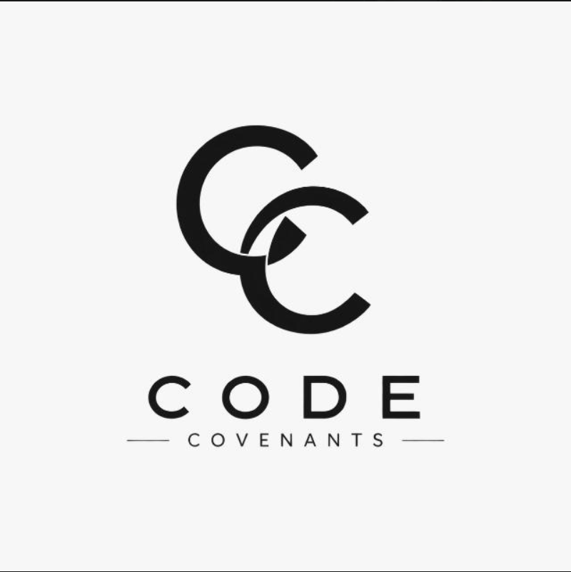
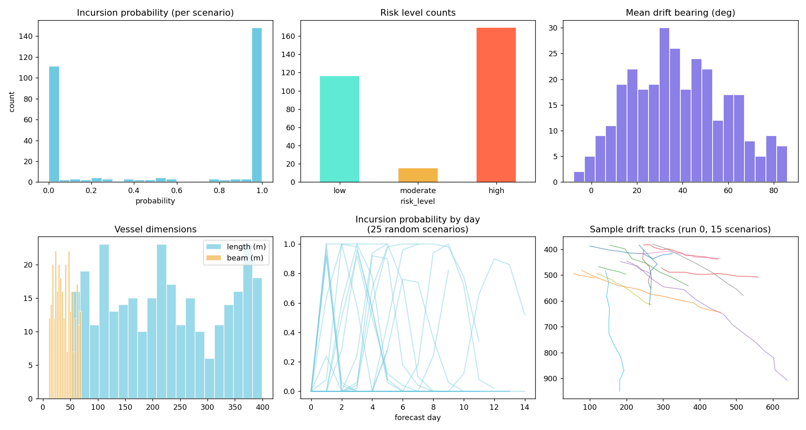

AI-Enabled Antarctic Navigation Decision Support · Fleet Edition
Multi-iceberg, multi-ship navigation simulator with real-time collision prediction, live weather integration, and Monte Carlo uncertainty analysis.
The Challenge
Antarctic and sub-Antarctic shipping lanes face growing iceberg incursion risk as climate patterns shift. Current decision support tools provide static risk maps — not dynamic, ship-specific forecasting.
• ~$2B+ in Antarctic shipping annually
• Iceberg incursions increasing 30% per decade
• 72 hours is the critical decision window
• Current tools: manual, slow, not ship-specific
Our Approach
Monte Carlo ensemble of iceberg trajectories under three ocean regimes (calm, moderate, storm). Wind/current uncertainty parameters produce 50 plausible drift paths per scenario.
Each ship follows a distinct route with customizable dimensions. Per-ship danger radius computed from vessel beam. Automatic collision stopping with blast animation.
Open-Meteo API feeds real wind speed, direction, and gusts into the drift model. Wind data adjusts bearing, scales drift velocity, and adds uncertainty.
Interactive Demo
Synthetic Dataset
| Split | Scenarios | Purpose |
|---|---|---|
| Train | 210 | Model training & calibration |
| Val | 45 | Hyperparameter tuning |
| Test | 45 | Final evaluation |
| Regime | Count | Drift Speed | High Risk % |
|---|---|---|---|
| 🟢 Calm | 95 | 8.8 km/day | 44% |
| 🟡 Moderate | 105 | 15.95 km/day | 65% |
| 🔴 Storm | 100 | 25.3 km/day | 60% |
Drift Analysis
Temporal Risk
Risk follows a bell-shaped temporal pattern — starting at zero, peaking around days 2–6, then declining as icebergs drift past the shipping lane.
53% of high-risk scenarios have peak risk before day 5, meaning early detection is critical.
Quality Assurance

Results Summary
168 out of 300 scenarios required fleet intervention
Most incursions peak between days 3–6
Average minimum iceberg-to-lane distance
| Feature | Correlation | Impact |
|---|---|---|
| Closest lane distance | -0.82 | Strongest predictor |
| Wind uncertainty % | +0.41 | Higher uncertainty → more risk |
| Drift speed | +0.38 | Faster drift = faster approach |
| Ship length | +0.12 | Larger ships = larger targets |
| Forecast horizon | +0.08 | Minimal direct effect |
Technical Architecture
• Monte Carlo drift simulation
• 3 ocean regimes (calm/mod/storm)
• Variable wind & current uncertainty
• 50 runs × 300 scenarios = 15K tracks
• Per-day incursion probability scoring
• Feature engineering from trajectories
• Lane proximity & confidence radius
• Ensemble classifier (RF + XGBoost)
• Temporal risk curve forecasting
• Ship-specific danger radius calculation
• Real-time fleet visualization
• Live Open-Meteo weather feed
• Automatic collision stopping
• Timeline scrubbing & replay
• Preset scenario demo mode
What's Next
• Integrate real AIS ship tracking data
• Satellite iceberg detection (SAR imagery)
• Multi-objective route optimization
• WebGL-accelerated 3D visualization
• Physics-informed neural network drift
• Digital twin of Antarctic shipping lanes
• Autonomous rerouting recommendations
• Integration with IMO compliance reporting
ICE·SIGHT FLEET — AI-Enabled Antarctic Navigation Decision Support